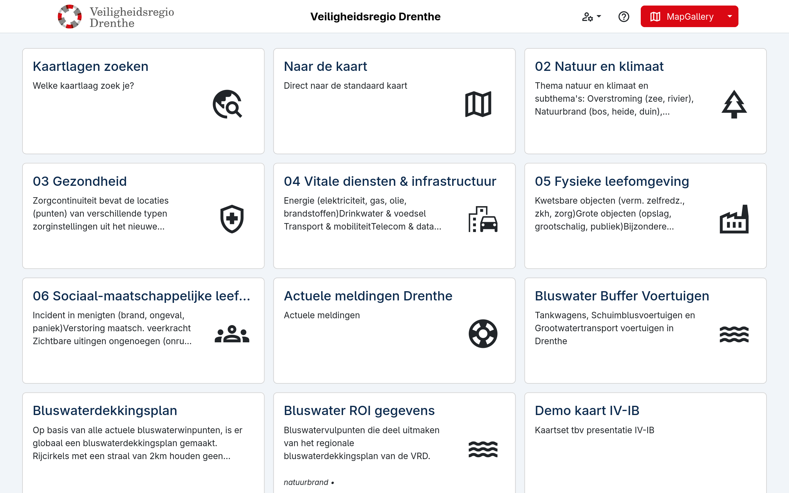

Veiligheidsregio Drenthe
Hoe VIK Drenthe met MapGallery werkt aan een duidelijker informatiebeeld
Een modern informatieknooppunt
De Veiligheidsregio Drenthe (VRD) werkt dagelijks aan de veiligheid van inwoners en organisaties. Om sneller en slimmer met informatie te kunnen werken, richtte VRD het Veiligheidsinformatie Knooppunt (VIK) op: een plek waar data, kaarten en analyses samenkomen ter ondersteuning van de crisisorganisatie, van dagelijkse monitoring tot acute incidenten.
De rol van MapGallery
Binnen het VIK is MapGallery een essentieel hulpmiddel voor het visualiseren en delen van geografische informatie. Kaartlagen, actuele data en externe bronnen worden in één omgeving gecombineerd, waardoor het VIK snel een gedeeld en betrouwbaar beeld kan creëren voor alle betrokken partners.
“Kaarten zijn onmisbaar voor operationele duiding. Met MapGallery presenteren we die informatie snel en helder.”
— Marc Komen
In de praktijk
Sinds de VIK-ruimte in april 2024 operationeel werd, ondersteunt MapGallery onder andere bij:
monitoring tijdens evenementen en drukke periodes,
- inzicht in risico’s zoals weersomstandigheden of natuurbranddreiging,
- real-time situational awareness tijdens opschaling,
- informatievoorziening richting gemeenten en hulpdiensten.
Door informatie centraal en visueel beschikbaar te maken, bevordert het VIK snellere besluitvorming en betere samenwerking binnen de regio.
Het resultaat
Dankzij de combinatie van VIK en MapGallery beschikt de veiligheidsregio over:
een actueel en gedeeld beeld,
- snellere duiding in crisismomenten,
- betere voorbereiding op risico’s,
- een future-proof informatievoorziening.

Samen verder
Het verhaal van VIK Drenthe laat zien hoe moderne veiligheidsregio’s datagedreven werken en profiteren van heldere kaartvisualisatie. MapGallery ondersteunt daarbij met een toegankelijke, flexibele geoviewer die direct inzetbaar is.
Wil je weten wat MapGallery voor jouw organisatie kan betekenen? Neem contact met ons op.